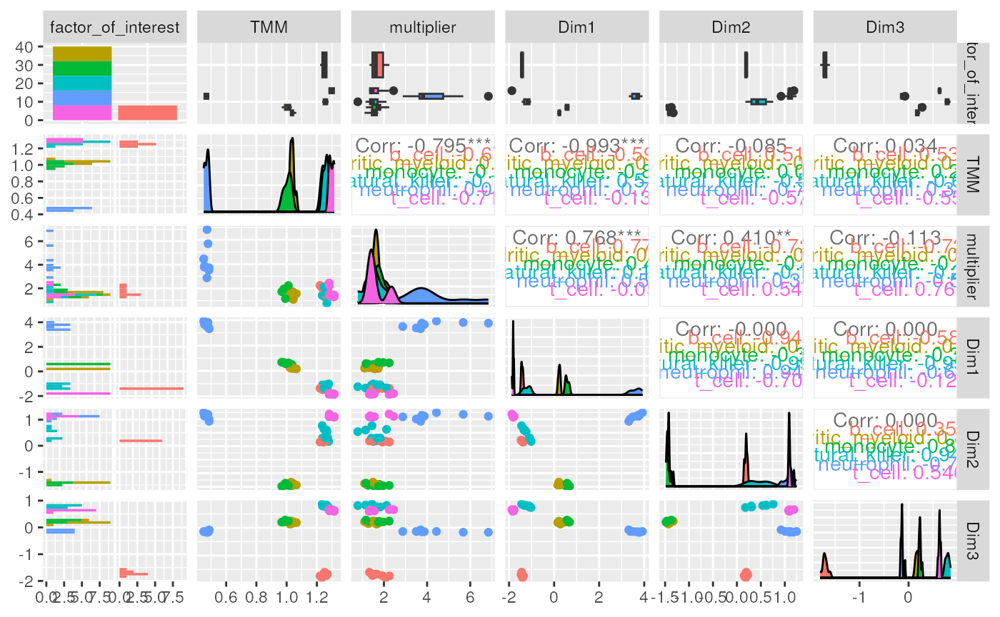
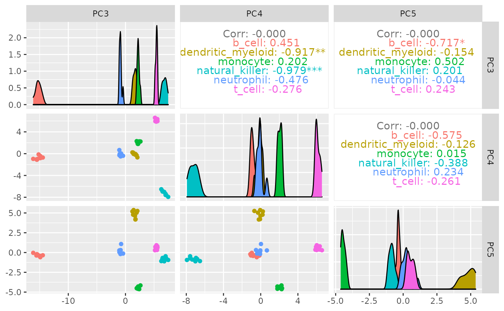
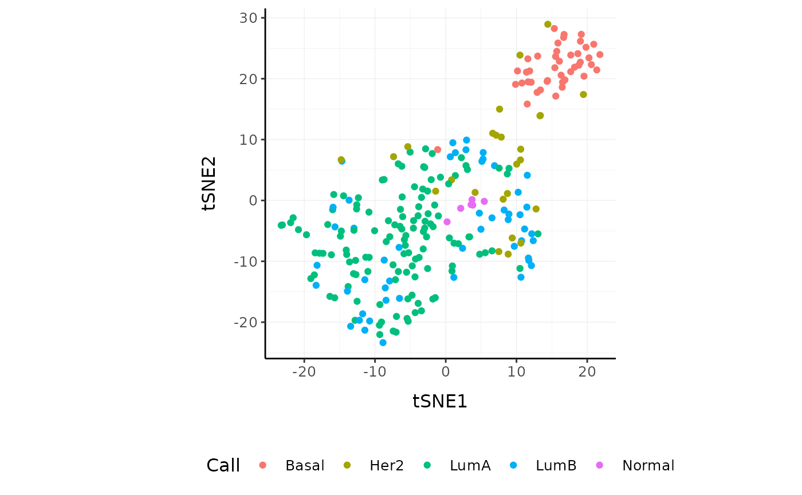

Overview of the tidybulk package
Stefano Mangiola
2022-05-28
Source:vignettes/introduction.Rmd
introduction.RmdBrings transcriptomics to the tidyverse

Functions/utilities available
| Function | Description |
|---|---|
identify_abundant |
identify the abundant genes |
aggregate_duplicates |
Aggregate abundance and annotation of duplicated transcripts in a robust way |
scale_abundance |
Scale (normalise) abundance for RNA sequencing depth |
reduce_dimensions |
Perform dimensionality reduction (PCA, MDS, tSNE) |
cluster_elements |
Labels elements with cluster identity (kmeans, SNN) |
remove_redundancy |
Filter out elements with highly correlated features |
adjust_abundance |
Remove known unwanted variation (Combat) |
test_differential_abundance |
Differential transcript abundance testing (DE) |
deconvolve_cellularity |
Estimated tissue composition (Cibersort or llsr) |
test_differential_cellularity |
Differential cell-type abundance testing |
keep_variable |
Filter for top variable features |
keep_abundant |
Filter out lowly abundant transcripts |
test_gene_enrichment |
Gene enrichment analyses (EGSEA) |
test_gene_overrepresentation |
Gene enrichment on list of transcript names (no rank) |
| Utilities | Description |
|---|---|
get_bibliography |
Get the bibliography of your workflow |
tidybulk |
add tidybulk attributes to a tibble object |
tidybulk_SAM_BAM |
Convert SAM BAM files into tidybulk tibble |
pivot_sample |
Select sample-wise columns/information |
pivot_transcript |
Select transcript-wise columns/information |
rotate_dimensions |
Rotate two dimensions of a degree |
ensembl_to_symbol |
Add gene symbol from ensembl IDs |
symbol_to_entrez |
Add entrez ID from gene symbol |
describe_transcript |
Add gene description from gene symbol |
impute_missing_abundance |
Impute abundance for missing data points using sample groupings |
fill_missing_abundance |
Fill abundance for missing data points using an arbitrary value |
All functions are directly compatibble with
SummarizedExperiment object.
Installation
From Bioconductor
BiocManager::install("tidybulk")From Github
devtools::install_github("stemangiola/tidybulk")Data
We will use a SummarizedExperiment object
counts_SE## # A SummarizedExperiment-tibble abstraction: 408,624 × 48
## # Features=8513 | Samples=48 | Assays=count
## .feature .sample count Cell.type time condition batch factor_of_interest
## <chr> <chr> <dbl> <fct> <fct> <lgl> <fct> <lgl>
## 1 A1BG SRR1740034 153 b_cell 0 d TRUE 0 TRUE
## 2 A1BG-AS1 SRR1740034 83 b_cell 0 d TRUE 0 TRUE
## 3 AAAS SRR1740034 868 b_cell 0 d TRUE 0 TRUE
## 4 AACS SRR1740034 222 b_cell 0 d TRUE 0 TRUE
## 5 AAGAB SRR1740034 590 b_cell 0 d TRUE 0 TRUE
## 6 AAMDC SRR1740034 48 b_cell 0 d TRUE 0 TRUE
## 7 AAMP SRR1740034 1257 b_cell 0 d TRUE 0 TRUE
## 8 AANAT SRR1740034 284 b_cell 0 d TRUE 0 TRUE
## 9 AAR2 SRR1740034 379 b_cell 0 d TRUE 0 TRUE
## 10 AARS2 SRR1740034 685 b_cell 0 d TRUE 0 TRUE
## # … with 40 more rowsLoading tidySummarizedExperiment will automatically
abstract this object as tibble, so we can display it and
manipulate it with tidy tools. Although it looks different, and more
tools (tidyverse) are available to us, this object is in fact a
SummarizedExperiment object.
class(counts_SE)## [1] "SummarizedExperiment"
## attr(,"package")
## [1] "SummarizedExperiment"Get the bibliography of your workflow
First of all, you can cite all articles utilised within your workflow automatically from any tidybulk tibble
counts_SE %>% get_bibliography()Aggregate duplicated transcripts
tidybulk provide the aggregate_duplicates function to
aggregate duplicated transcripts (e.g., isoforms, ensembl). For example,
we often have to convert ensembl symbols to gene/transcript symbol, but
in doing so we have to deal with duplicates.
aggregate_duplicates takes a tibble and column names (as
symbols; for sample, transcript and
count) as arguments and returns a tibble with transcripts
with the same name aggregated. All the rest of the columns are appended,
and factors and boolean are appended as characters.
TidyTranscriptomics
rowData(counts_SE)$gene_name = rownames(counts_SE)
counts_SE.aggr = counts_SE %>% aggregate_duplicates(.transcript = gene_name)Standard procedure (comparative purpose)
Scale counts
We may want to compensate for sequencing depth, scaling the
transcript abundance (e.g., with TMM algorithm, Robinson and Oshlack
doi.org/10.1186/gb-2010-11-3-r25). scale_abundance takes a
tibble, column names (as symbols; for sample,
transcript and count) and a method as
arguments and returns a tibble with additional columns with scaled data
as <NAME OF COUNT COLUMN>_scaled.
TidyTranscriptomics
counts_SE.norm = counts_SE.aggr %>% identify_abundant(factor_of_interest = condition) %>% scale_abundance()Standard procedure (comparative purpose)
library(edgeR)
dgList <- DGEList(count_m=x,group=group)
keep <- filterByExpr(dgList)
dgList <- dgList[keep,,keep.lib.sizes=FALSE]
[...]
dgList <- calcNormFactors(dgList, method="TMM")
norm_counts.table <- cpm(dgList)We can easily plot the scaled density to check the scaling outcome. On the x axis we have the log scaled counts, on the y axes we have the density, data is grouped by sample and coloured by cell type.
counts_SE.norm %>%
ggplot(aes(count_scaled + 1, group=sample, color=`Cell.type`)) +
geom_density() +
scale_x_log10() +
my_theme
Filter variable transcripts
We may want to identify and filter variable transcripts.
TidyTranscriptomics
counts_SE.norm.variable = counts_SE.norm %>% keep_variable()Standard procedure (comparative purpose)
Reduce dimensions
We may want to reduce the dimensions of our data, for example using
PCA or MDS algorithms. reduce_dimensions takes a tibble,
column names (as symbols; for sample,
transcript and count) and a method (e.g., MDS
or PCA) as arguments and returns a tibble with additional columns for
the reduced dimensions.
MDS (Robinson et al., 10.1093/bioinformatics/btp616)
TidyTranscriptomics
counts_SE.norm.MDS =
counts_SE.norm %>%
reduce_dimensions(method="MDS", .dims = 6)Standard procedure (comparative purpose)
On the x and y axes axis we have the reduced dimensions 1 to 3, data is coloured by cell type.
counts_SE.norm.MDS %>% pivot_sample() %>% select(contains("Dim"), everything())## # A tibble: 48 × 14
## Dim1 Dim2 Dim3 Dim4 Dim5 Dim6 sample Cell.type time
## <dbl> <dbl> <dbl> <dbl> <dbl> <dbl> <chr> <fct> <fct>
## 1 -1.46 0.220 -1.68 0.0553 0.0658 -0.126 SRR1740034 b_cell 0 d
## 2 -1.46 0.226 -1.71 0.0300 0.0454 -0.137 SRR1740035 b_cell 1 d
## 3 -1.44 0.193 -1.60 0.0890 0.0503 -0.121 SRR1740036 b_cell 3 d
## 4 -1.44 0.198 -1.67 0.0891 0.0543 -0.110 SRR1740037 b_cell 7 d
## 5 0.243 -1.42 0.182 0.00642 -0.503 -0.131 SRR1740038 dendritic_mye… 0 d
## 6 0.191 -1.42 0.195 0.0180 -0.457 -0.130 SRR1740039 dendritic_mye… 1 d
## 7 0.257 -1.42 0.152 0.0130 -0.582 -0.0927 SRR1740040 dendritic_mye… 3 d
## 8 0.162 -1.43 0.189 0.0232 -0.452 -0.109 SRR1740041 dendritic_mye… 7 d
## 9 0.516 -1.47 0.240 -0.251 0.457 -0.119 SRR1740042 monocyte 0 d
## 10 0.514 -1.41 0.231 -0.219 0.458 -0.131 SRR1740043 monocyte 1 d
## # … with 38 more rows, and 5 more variables: condition <lgl>, batch <fct>,
## # factor_of_interest <lgl>, TMM <dbl>, multiplier <dbl>
counts_SE.norm.MDS %>%
pivot_sample() %>%
GGally::ggpairs(columns = 6:(6+5), ggplot2::aes(colour=`Cell.type`))
PCA
TidyTranscriptomics
counts_SE.norm.PCA =
counts_SE.norm %>%
reduce_dimensions(method="PCA", .dims = 6)Standard procedure (comparative purpose)
On the x and y axes axis we have the reduced dimensions 1 to 3, data is coloured by cell type.
counts_SE.norm.PCA %>% pivot_sample() %>% select(contains("PC"), everything())## # A tibble: 48 × 14
## PC1 PC2 PC3 PC4 PC5 PC6 sample Cell.type time condition
## <dbl> <dbl> <dbl> <dbl> <dbl> <dbl> <chr> <fct> <fct> <lgl>
## 1 -12.6 -2.52 -14.9 -0.424 -0.592 -1.22 SRR17400… b_cell 0 d TRUE
## 2 -12.6 -2.57 -15.2 -0.140 -0.388 -1.30 SRR17400… b_cell 1 d TRUE
## 3 -12.6 -2.41 -14.5 -0.714 -0.344 -1.10 SRR17400… b_cell 3 d TRUE
## 4 -12.5 -2.34 -14.9 -0.816 -0.427 -1.00 SRR17400… b_cell 7 d TRUE
## 5 0.189 13.0 1.66 -0.0269 4.64 -1.35 SRR17400… dendriti… 0 d FALSE
## 6 -0.293 12.9 1.76 -0.0727 4.21 -1.28 SRR17400… dendriti… 1 d FALSE
## 7 0.407 13.0 1.42 -0.0529 5.37 -1.01 SRR17400… dendriti… 3 d FALSE
## 8 -0.620 13.0 1.73 -0.201 4.17 -1.07 SRR17400… dendriti… 7 d FALSE
## 9 2.56 13.5 2.32 2.03 -4.32 -1.22 SRR17400… monocyte 0 d FALSE
## 10 2.65 13.1 2.21 1.80 -4.29 -1.30 SRR17400… monocyte 1 d FALSE
## # … with 38 more rows, and 4 more variables: batch <fct>,
## # factor_of_interest <lgl>, TMM <dbl>, multiplier <dbl>
counts_SE.norm.PCA %>%
pivot_sample() %>%
GGally::ggpairs(columns = 11:13, ggplot2::aes(colour=`Cell.type`))
tSNETidyTranscriptomics
counts_SE.norm.tSNE =
breast_tcga_mini_SE %>%
identify_abundant() %>%
reduce_dimensions(
method = "tSNE",
perplexity=10,
pca_scale =TRUE
)Standard procedure (comparative purpose)
Plot
counts_SE.norm.tSNE %>%
pivot_sample() %>%
select(contains("tSNE"), everything()) ## # A tibble: 251 × 4
## tSNE1 tSNE2 sample Call
## <dbl> <dbl> <chr> <fct>
## 1 -5.09 3.35 TCGA-A1-A0SD-01A-11R-A115-07 LumA
## 2 2.41 -6.49 TCGA-A1-A0SF-01A-11R-A144-07 LumA
## 3 -3.27 10.4 TCGA-A1-A0SG-01A-11R-A144-07 LumA
## 4 -13.6 -5.99 TCGA-A1-A0SH-01A-11R-A084-07 LumA
## 5 -14.9 -3.19 TCGA-A1-A0SI-01A-11R-A144-07 LumB
## 6 -1.93 8.95 TCGA-A1-A0SJ-01A-11R-A084-07 LumA
## 7 17.1 -14.4 TCGA-A1-A0SK-01A-12R-A084-07 Basal
## 8 -10.8 -7.40 TCGA-A1-A0SM-01A-11R-A084-07 LumA
## 9 -9.85 -8.70 TCGA-A1-A0SN-01A-11R-A144-07 LumB
## 10 -1.88 16.9 TCGA-A1-A0SQ-01A-21R-A144-07 LumA
## # … with 241 more rows
counts_SE.norm.tSNE %>%
pivot_sample() %>%
ggplot(aes(x = `tSNE1`, y = `tSNE2`, color=Call)) + geom_point() + my_theme
Rotate dimensions
We may want to rotate the reduced dimensions (or any two numeric columns
really) of our data, of a set angle. rotate_dimensions
takes a tibble, column names (as symbols; for sample,
transcript and count) and an angle as
arguments and returns a tibble with additional columns for the rotated
dimensions. The rotated dimensions will be added to the original data
set as <NAME OF DIMENSION> rotated <ANGLE> by
default, or as specified in the input arguments.
TidyTranscriptomics
counts_SE.norm.MDS.rotated =
counts_SE.norm.MDS %>%
rotate_dimensions(`Dim1`, `Dim2`, rotation_degrees = 45, action="get")Standard procedure (comparative purpose)
Original On the x and y axes axis we have the first two reduced dimensions, data is coloured by cell type.
counts_SE.norm.MDS.rotated %>%
ggplot(aes(x=`Dim1`, y=`Dim2`, color=`Cell.type` )) +
geom_point() +
my_theme
Rotated On the x and y axes axis we have the first two reduced dimensions rotated of 45 degrees, data is coloured by cell type.
counts_SE.norm.MDS.rotated %>%
pivot_sample() %>%
ggplot(aes(x=`Dim1_rotated_45`, y=`Dim2_rotated_45`, color=`Cell.type` )) +
geom_point() +
my_theme
Test differential abundance
We may want to test for differential transcription between sample-wise
factors of interest (e.g., with edgeR).
test_differential_abundance takes a tibble, column names
(as symbols; for sample, transcript and
count) and a formula representing the desired linear model
as arguments and returns a tibble with additional columns for the
statistics from the hypothesis test (e.g., log fold change, p-value and
false discovery rate).
TidyTranscriptomics
counts_SE.de =
counts_SE %>%
test_differential_abundance( ~ condition, action="get")
counts_SE.deStandard procedure (comparative purpose)
library(edgeR)
dgList <- DGEList(counts=counts_m,group=group)
keep <- filterByExpr(dgList)
dgList <- dgList[keep,,keep.lib.sizes=FALSE]
dgList <- calcNormFactors(dgList)
design <- model.matrix(~group)
dgList <- estimateDisp(dgList,design)
fit <- glmQLFit(dgList,design)
qlf <- glmQLFTest(fit,coef=2)
topTags(qlf, n=Inf)The functon test_differential_abundance operated with
contrasts too. The constrasts hve the name of the design matrix
(generally
counts_SE.de =
counts_SE %>%
identify_abundant(factor_of_interest = condition) %>%
test_differential_abundance(
~ 0 + condition,
.contrasts = c( "conditionTRUE - conditionFALSE"),
action="get"
)Adjust counts
We may want to adjust counts for (known) unwanted
variation. adjust_abundance takes as arguments a tibble,
column names (as symbols; for sample,
transcript and count) and a formula
representing the desired linear model where the first covariate is the
factor of interest and the second covariate is the unwanted variation,
and returns a tibble with additional columns for the adjusted counts as
<COUNT COLUMN>_adjusted. At the moment just an
unwanted covariated is allowed at a time.
TidyTranscriptomics
counts_SE.norm.adj =
counts_SE.norm %>% adjust_abundance( ~ factor_of_interest + batch)Standard procedure (comparative purpose)
library(sva)
count_m_log = log(count_m + 1)
design =
model.matrix(
object = ~ factor_of_interest + batch,
data = annotation
)
count_m_log.sva =
ComBat(
batch = design[,2],
mod = design,
...
)
count_m_log.sva = ceiling(exp(count_m_log.sva) -1)
count_m_log.sva$cell_type = counts[
match(counts$sample, rownames(count_m_log.sva)),
"Cell.type"
]Deconvolve Cell type composition
We may want to infer the cell type composition of our samples (with
the algorithm Cibersort; Newman et al., 10.1038/nmeth.3337).
deconvolve_cellularity takes as arguments a tibble, column
names (as symbols; for sample, transcript and
count) and returns a tibble with additional columns for the
adjusted cell type proportions.
TidyTranscriptomics
counts_SE.cibersort =
counts_SE %>%
deconvolve_cellularity(action="get", cores=1, prefix = "cibersort__") Standard procedure (comparative purpose)
source(‘CIBERSORT.R’)
count_m %>% write.table("mixture_file.txt")
results <- CIBERSORT(
"sig_matrix_file.txt",
"mixture_file.txt",
perm=100, QN=TRUE
)
results$cell_type = tibble_counts[
match(tibble_counts$sample, rownames(results)),
"Cell.type"
]With the new annotated data frame, we can plot the distributions of cell types across samples, and compare them with the nominal cell type labels to check for the purity of isolation. On the x axis we have the cell types inferred by Cibersort, on the y axis we have the inferred proportions. The data is facetted and coloured by nominal cell types (annotation given by the researcher after FACS sorting).
counts_SE.cibersort %>%
pivot_longer(
names_to= "Cell_type_inferred",
values_to = "proportion",
names_prefix ="cibersort__",
cols=contains("cibersort__")
) %>%
ggplot(aes(x=`Cell_type_inferred`, y=proportion, fill=`Cell.type`)) +
geom_boxplot() +
facet_wrap(~`Cell.type`) +
my_theme +
theme(axis.text.x = element_text(angle = 90, hjust = 1, vjust = 0.5), aspect.ratio=1/5)
Test differential cell-type abundance
We can also perform a statistical test on the differential cell-type abundance across conditions
counts_SE %>%
test_differential_cellularity(. ~ condition )We can also perform regression analysis with censored data (coxph).
counts_SE %>%
test_differential_cellularity(survival::Surv(time, dead) ~ .)Cluster samples
We may want to cluster our data (e.g., using k-means sample-wise).
cluster_elements takes as arguments a tibble, column names
(as symbols; for sample, transcript and
count) and returns a tibble with additional columns for the
cluster annotation. At the moment only k-means clustering is supported,
the plan is to introduce more clustering methods.
k-means
TidyTranscriptomics
counts_SE.norm.cluster = counts_SE.norm.MDS %>%
cluster_elements(method="kmeans", centers = 2, action="get" )Standard procedure (comparative purpose)
We can add cluster annotation to the MDS dimension reduced data set and plot.
counts_SE.norm.cluster %>%
ggplot(aes(x=`Dim1`, y=`Dim2`, color=`cluster_kmeans`)) +
geom_point() +
my_theme
SNN
Matrix package (v1.3-3) causes an error with Seurat::FindNeighbors used in this method. We are trying to solve this issue. At the moment this option in unaviable.
TidyTranscriptomics
counts_SE.norm.SNN =
counts_SE.norm.tSNE %>%
cluster_elements(method = "SNN")Standard procedure (comparative purpose)
library(Seurat)
snn = CreateSeuratObject(count_m)
snn = ScaleData(
snn, display.progress = TRUE,
num.cores=4, do.par = TRUE
)
snn = FindVariableFeatures(snn, selection.method = "vst")
snn = FindVariableFeatures(snn, selection.method = "vst")
snn = RunPCA(snn, npcs = 30)
snn = FindNeighbors(snn)
snn = FindClusters(snn, method = "igraph", ...)
snn = snn[["seurat_clusters"]]
snn$cell_type = tibble_counts[
match(tibble_counts$sample, rownames(snn)),
c("Cell.type", "Dim1", "Dim2")
]
counts_SE.norm.SNN %>%
pivot_sample() %>%
select(contains("tSNE"), everything())
counts_SE.norm.SNN %>%
pivot_sample() %>%
gather(source, Call, c("cluster_SNN", "Call")) %>%
distinct() %>%
ggplot(aes(x = `tSNE1`, y = `tSNE2`, color=Call)) + geom_point() + facet_grid(~source) + my_theme
# Do differential transcription between clusters
counts_SE.norm.SNN %>%
mutate(factor_of_interest = `cluster_SNN` == 3) %>%
test_differential_abundance(
~ factor_of_interest,
action="get"
)Drop redundant transcripts
We may want to remove redundant elements from the original data set
(e.g., samples or transcripts), for example if we want to define
cell-type specific signatures with low sample redundancy.
remove_redundancy takes as arguments a tibble, column names
(as symbols; for sample, transcript and
count) and returns a tibble with redundant elements removed
(e.g., samples). Two redundancy estimation approaches are supported:
- removal of highly correlated clusters of elements (keeping a representative) with method=“correlation”
- removal of most proximal element pairs in a reduced dimensional space.
Approach 1
TidyTranscriptomics
counts_SE.norm.non_redundant =
counts_SE.norm.MDS %>%
remove_redundancy( method = "correlation" )Standard procedure (comparative purpose)
library(widyr)
.data.correlated =
pairwise_cor(
counts,
sample,
transcript,
rc,
sort = TRUE,
diag = FALSE,
upper = FALSE
) %>%
filter(correlation > correlation_threshold) %>%
distinct(item1) %>%
rename(!!.element := item1)
# Return non redudant data frame
counts %>% anti_join(.data.correlated) %>%
spread(sample, rc, - transcript) %>%
left_join(annotation)We can visualise how the reduced redundancy with the reduced dimentions look like
counts_SE.norm.non_redundant %>%
pivot_sample() %>%
ggplot(aes(x=`Dim1`, y=`Dim2`, color=`Cell.type`)) +
geom_point() +
my_theme
Approach 2
counts_SE.norm.non_redundant =
counts_SE.norm.MDS %>%
remove_redundancy(
method = "reduced_dimensions",
Dim_a_column = `Dim1`,
Dim_b_column = `Dim2`
)We can visualise MDS reduced dimensions of the samples with the closest pair removed.
counts_SE.norm.non_redundant %>%
pivot_sample() %>%
ggplot(aes(x=`Dim1`, y=`Dim2`, color=`Cell.type`)) +
geom_point() +
my_theme
Other useful wrappers
The above wrapper streamline the most common processing of bulk RNA sequencing data. Other useful wrappers are listed above.
From BAM/SAM to tibble of gene counts
We can calculate gene counts (using FeatureCounts; Liao Y et al., 10.1093/nar/gkz114) from a list of BAM/SAM files and format them into a tidy structure (similar to counts).
counts = tidybulk_SAM_BAM(
file_names,
genome = "hg38",
isPairedEnd = TRUE,
requireBothEndsMapped = TRUE,
checkFragLength = FALSE,
useMetaFeatures = TRUE
)From ensembl IDs to gene symbol IDs
We can add gene symbols from ensembl identifiers. This is useful since different resources use ensembl IDs while others use gene symbol IDs. This currently works for human and mouse.
counts_ensembl %>% ensembl_to_symbol(ens)## # A tibble: 119 × 8
## ens iso `read count` sample cases_0_project… cases_0_samples… transcript
## <chr> <chr> <dbl> <chr> <chr> <chr> <chr>
## 1 ENSG0… 13 144 TARGE… Acute Myeloid L… Primary Blood D… TSPAN6
## 2 ENSG0… 13 72 TARGE… Acute Myeloid L… Primary Blood D… TSPAN6
## 3 ENSG0… 13 0 TARGE… Acute Myeloid L… Primary Blood D… TSPAN6
## 4 ENSG0… 13 1099 TARGE… Acute Myeloid L… Primary Blood D… TSPAN6
## 5 ENSG0… 13 11 TARGE… Acute Myeloid L… Primary Blood D… TSPAN6
## 6 ENSG0… 13 2 TARGE… Acute Myeloid L… Primary Blood D… TSPAN6
## 7 ENSG0… 13 3 TARGE… Acute Myeloid L… Primary Blood D… TSPAN6
## 8 ENSG0… 13 2678 TARGE… Acute Myeloid L… Primary Blood D… TSPAN6
## 9 ENSG0… 13 751 TARGE… Acute Myeloid L… Primary Blood D… TSPAN6
## 10 ENSG0… 13 1 TARGE… Acute Myeloid L… Primary Blood D… TSPAN6
## # … with 109 more rows, and 1 more variable: ref_genome <chr>From gene symbol to gene description (gene name in full)
We can add gene full name (and in future description) from symbol identifiers. This currently works for human and mouse.
counts_SE %>%
describe_transcript() %>%
select(feature, description, everything())## # A SummarizedExperiment-tibble abstraction: 408,624 × 48
## # Features=8513 | Samples=48 | Assays=count
## feature sample count Cell.type time condition batch factor_of_interest
## <chr> <chr> <dbl> <fct> <fct> <lgl> <fct> <lgl>
## 1 A1BG SRR1740034 153 b_cell 0 d TRUE 0 TRUE
## 2 A1BG-AS1 SRR1740034 83 b_cell 0 d TRUE 0 TRUE
## 3 AAAS SRR1740034 868 b_cell 0 d TRUE 0 TRUE
## 4 AACS SRR1740034 222 b_cell 0 d TRUE 0 TRUE
## 5 AAGAB SRR1740034 590 b_cell 0 d TRUE 0 TRUE
## 6 AAMDC SRR1740034 48 b_cell 0 d TRUE 0 TRUE
## 7 AAMP SRR1740034 1257 b_cell 0 d TRUE 0 TRUE
## 8 AANAT SRR1740034 284 b_cell 0 d TRUE 0 TRUE
## 9 AAR2 SRR1740034 379 b_cell 0 d TRUE 0 TRUE
## 10 AARS2 SRR1740034 685 b_cell 0 d TRUE 0 TRUE
## # … with 40 more rows, and 2 more variables: description <chr>, gene_name <chr>Appendix
## R version 4.2.0 (2022-04-22)
## Platform: x86_64-pc-linux-gnu (64-bit)
## Running under: Ubuntu 20.04.4 LTS
##
## Matrix products: default
## BLAS: /usr/lib/x86_64-linux-gnu/openblas-pthread/libblas.so.3
## LAPACK: /usr/lib/x86_64-linux-gnu/openblas-pthread/liblapack.so.3
##
## locale:
## [1] LC_CTYPE=en_US.UTF-8 LC_NUMERIC=C
## [3] LC_TIME=en_US.UTF-8 LC_COLLATE=en_US.UTF-8
## [5] LC_MONETARY=en_US.UTF-8 LC_MESSAGES=en_US.UTF-8
## [7] LC_PAPER=en_US.UTF-8 LC_NAME=C
## [9] LC_ADDRESS=C LC_TELEPHONE=C
## [11] LC_MEASUREMENT=en_US.UTF-8 LC_IDENTIFICATION=C
##
## attached base packages:
## [1] stats4 stats graphics grDevices utils datasets methods
## [8] base
##
## other attached packages:
## [1] tidySummarizedExperiment_1.6.1 SummarizedExperiment_1.26.1
## [3] Biobase_2.56.0 GenomicRanges_1.48.0
## [5] GenomeInfoDb_1.32.2 IRanges_2.30.0
## [7] S4Vectors_0.34.0 BiocGenerics_0.42.0
## [9] MatrixGenerics_1.8.0 matrixStats_0.62.0
## [11] tidybulk_1.7.3 ggrepel_0.9.1
## [13] ggplot2_3.3.6 magrittr_2.0.3
## [15] tibble_3.1.7 tidyr_1.2.0
## [17] dplyr_1.0.9 knitr_1.39
## [19] BiocStyle_2.24.0
##
## loaded via a namespace (and not attached):
## [1] Rtsne_0.16 colorspace_2.0-3 ellipsis_0.3.2
## [4] class_7.3-20 rprojroot_2.0.3 XVector_0.36.0
## [7] fs_1.5.2 tidytext_0.3.3 proxy_0.4-26
## [10] farver_2.1.0 SnowballC_0.7.0 bit64_4.0.5
## [13] AnnotationDbi_1.58.0 fansi_1.0.3 codetools_0.2-18
## [16] splines_4.2.0 cachem_1.0.6 jsonlite_1.8.0
## [19] broom_0.8.0 annotate_1.74.0 png_0.1-7
## [22] BiocManager_1.30.18 readr_2.1.2 compiler_4.2.0
## [25] httr_1.4.3 backports_1.4.1 assertthat_0.2.1
## [28] Matrix_1.4-1 fastmap_1.1.0 lazyeval_0.2.2
## [31] limma_3.52.1 cli_3.3.0 org.Mm.eg.db_3.15.0
## [34] htmltools_0.5.2 tools_4.2.0 gtable_0.3.0
## [37] glue_1.6.2 GenomeInfoDbData_1.2.8 reshape2_1.4.4
## [40] Rcpp_1.0.8.3 jquerylib_0.1.4 pkgdown_2.0.3
## [43] vctrs_0.4.1 Biostrings_2.64.0 preprocessCore_1.58.0
## [46] nlme_3.1-157 xfun_0.31 stringr_1.4.0
## [49] lifecycle_1.0.1 XML_3.99-0.9 org.Hs.eg.db_3.15.0
## [52] edgeR_3.38.1 zlibbioc_1.42.0 scales_1.2.0
## [55] ragg_1.2.2 hms_1.1.1 parallel_4.2.0
## [58] RColorBrewer_1.1-3 yaml_2.3.5 memoise_2.0.1
## [61] sass_0.4.1 reshape_0.8.9 stringi_1.7.6
## [64] RSQLite_2.2.14 highr_0.9 genefilter_1.78.0
## [67] tokenizers_0.2.1 desc_1.4.1 e1071_1.7-9
## [70] BiocParallel_1.30.2 rlang_1.0.2 pkgconfig_2.0.3
## [73] systemfonts_1.0.4 bitops_1.0-7 evaluate_0.15
## [76] lattice_0.20-45 purrr_0.3.4 htmlwidgets_1.5.4
## [79] labeling_0.4.2 bit_4.0.4 tidyselect_1.1.2
## [82] GGally_2.1.2 plyr_1.8.7 bookdown_0.26
## [85] R6_2.5.1 generics_0.1.2 DelayedArray_0.22.0
## [88] DBI_1.1.2 pillar_1.7.0 withr_2.5.0
## [91] mgcv_1.8-40 survival_3.3-1 KEGGREST_1.36.0
## [94] RCurl_1.98-1.6 janeaustenr_0.1.5 widyr_0.1.4
## [97] crayon_1.5.1 utf8_1.2.2 plotly_4.10.0
## [100] tzdb_0.3.0 rmarkdown_2.14 locfit_1.5-9.5
## [103] grid_4.2.0 sva_3.44.0 data.table_1.14.2
## [106] blob_1.2.3 digest_0.6.29 xtable_1.8-4
## [109] textshaping_0.3.6 munsell_0.5.0 viridisLite_0.4.0
## [112] bslib_0.3.1